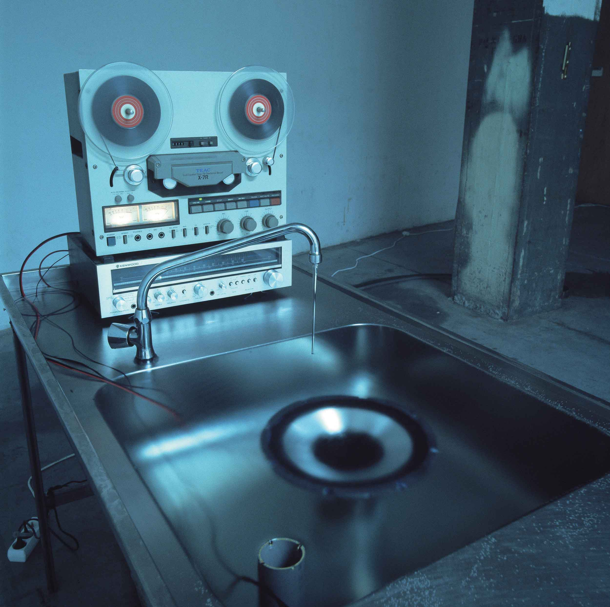
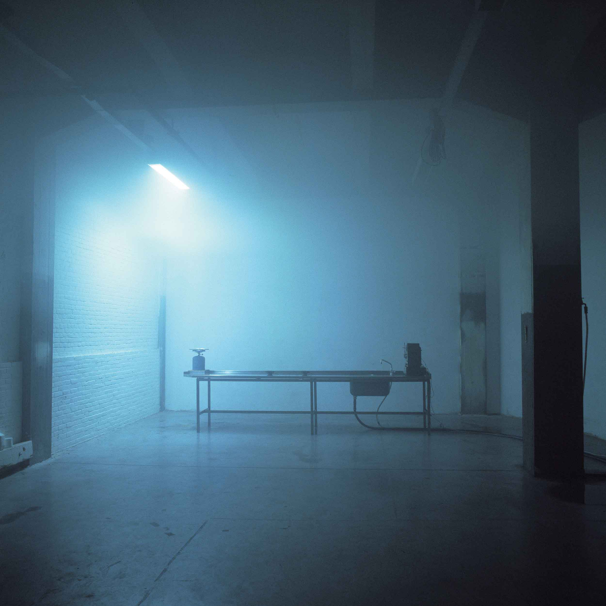

Cargo II, Foundation Kunstwerk Loods 6, Amsterdam
2001
This installation was built at site during a one week work shop using materials and equipment found or bought
from a local flee market. The consequent exhibition lasted only for the following weekend.
We built legs for old table with sink that we found from the exhibition space (which was an old warehouse).
The sink was connected to water pipes and drain and the water was running constantly which kept the sink and
the table top full to the brim. The speed of the running water was adjusted so that the water seemed totally
still although there was movement all the time.
The old real to real tape recorder on the table was palying William Burroughs' "Break Through in Grey Room"
mixed with some deep bass sound. We placed the spakers on the table covered with water and sank the base
speaker into the sink. The vibrations of the bass speaker created ripples to the surface of the water. On the
other end of the table was placed a gas coocer burning ammonium chloride in order to create smoke to the
space.

